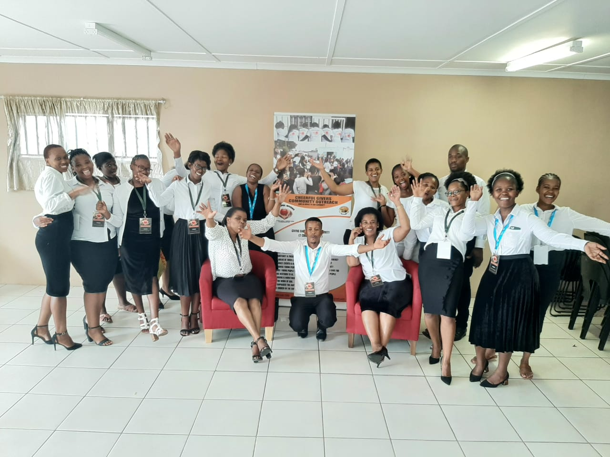

Cheerful Givers Community Outreach was established in mid-June 2018 in Bloekombos, Kraaifontein. It is a movement of young people united by one vision — to give back to the community and bring lasting change.
Under the leadership of senior pastors at God’s Harvest Center Ministries, the organization was born from a deep need within the community. Many people face challenges such as poverty, unemployment, crime, violence, and drug abuse.
Cheerful Givers exists to respond to these realities — by expressing love, restoring dignity, and empowering young people to rise above their circumstances and become leaders of tomorrow.
We assist learners with homework, reading, and exam preparation in a safe learning environment. Our goal is to help every child improve their academic performance and build confidence in education.
We focus on discipline, consistency, and giving learners the support they may not receive at home.
Many families face hunger and hardship. Through our feeding program, we provide warm meals and food parcels to children and vulnerable households.
No child should learn on an empty stomach — we stand in that gap with love and dignity.
We guide young people through weekly Bible studies, helping them grow in faith, character, and purpose.
Our focus is to build strong moral foundations and encourage positive life choices rooted in faith.
We help young people prepare professional CVs, learn interview skills, and understand workplace expectations.
We also connect youth with opportunities where possible, helping reduce unemployment in the community.
We run outreach events that bring hope, food, clothing, and encouragement to families in need across Bloekombos.
These programs are designed to restore dignity and strengthen community unity.
We mentor young people facing challenges such as crime, peer pressure, and unemployment.
Through guidance and motivation, we help them rediscover purpose and direction in life.
A dedicated group of young leaders committed to making a difference and serving the community with passion and integrity.
Provides leadership and ensures the vision is fulfilled.
Coordinates communication and documentation.
Ensures financial accountability and transparency.
Leads programs that impact the community directly.
Guides young people toward growth and purpose.
Manages volunteers and community engagement.
Address: 15090 Sam Njokozela Street, Bloekombos
Phone: 07822378797 / 07391868097
Email: cheerfulgivers.youth@gmail.com